Exemplos Praticos¶
Exemplos de uso real cobrindo todas as funcionalidades do Gingo. Cada secao mostra a API Python, a CLI, e aplicacoes musicais concretas.
Audio interativo
Esta pagina inclui players de audio nos exemplos — clique para ouvir o resultado sonoro diretamente no navegador.
1. Fretboard — Digitacoes de violao¶
O Fretboard modela o braco de instrumentos de cordas e calcula digitacoes
otimas usando o sistema CAGED. Suporta violao (6 cordas), cavaquinho (4 cordas),
bandolim (4 cordas) e instrumentos customizados.
Digitacao de um acorde¶
from gingo import Fretboard, Chord
fb = Fretboard.violao()
# Digitacao otima para Am (a melhor entre todas as posicoes)
f = fb.fingering(Chord("Am"))
print(f) # Fingering: X 0 2 2 1 0
print(f.chord_name) # "Am"
print(f.base_fret) # 1
print(f.barre) # 0 (sem pestana)
# Detalhes de cada corda
for s in f.strings:
if s.action.name == "Open":
print(f" Corda {s.string}: solta ({fb.note_at(s.string, 0)})")
elif s.action.name == "Fretted":
print(f" Corda {s.string}: casa {s.fret} ({fb.note_at(s.string, s.fret)})")
else:
print(f" Corda {s.string}: muda")
# Notas MIDI da digitacao (para sintese ou MIDI export)
print(f.midi_notes) # [45, 52, 57, 60, 64]
Saida:
Am fingering
chord_name: Am
base_fret: 1
barre: 0
Corda 1: solta (E)
Corda 2: casa 1 (C)
Corda 3: casa 2 (A)
Corda 4: casa 2 (E)
Corda 5: solta (A)
Corda 6: muda
midi_notes: [45, 52, 57, 60, 64]
Todas as digitacoes possiveis¶
from gingo import Fretboard, Chord
fb = Fretboard.violao()
# O Gingo encontra TODAS as digitacoes validas e rankeia por conforto
for i, fig in enumerate(fb.fingerings(Chord("GM")), 1):
print(f"{i}. {fig} (base: casa {fig.base_fret}, barre: {fig.barre})")
Pestanas (barre chords)¶
from gingo import Fretboard, Chord
fb = Fretboard.violao()
# Acordes com pestana — o algoritmo CAGED encontra automaticamente
acordes_barre = ["FM", "BbM", "Bm", "F#m", "C#M", "AbM"]
for nome in acordes_barre:
f = fb.fingering(Chord(nome))
barre = "pestana" if f.barre else "sem pestana"
print(f"{nome:5s}: {f} ({barre}, casa {f.base_fret})")
Saida:
FM : FM fingering (pestana, casa 1)
BbM : BbM fingering (pestana, casa 1)
Bm : Bm fingering (pestana, casa 2)
F#m : F#m fingering (pestana, casa 2)
C#M : C#M fingering (pestana, casa 4)
AbM : AbM fingering (pestana, casa 4)
Capo — transpor com capotraste¶
from gingo import Fretboard, Chord
fb = Fretboard.violao()
# Com capo na casa 2, as formas ficam mais simples
fb_capo2 = fb.capo(2)
print(fb_capo2.name()) # "violao (capo 2)"
# Am shape com capo 2 = Bm (transposto 2 semitons)
print(fb_capo2.fingering(Chord("Bm")))
# Comparar: Bm sem capo vs com capo 2
print(f"Bm sem capo: {fb.fingering(Chord('Bm'))}")
print(f"Bm com capo 2: {fb_capo2.fingering(Chord('Bm'))}")
Posicoes de escala no braco¶
from gingo import Fretboard, Scale
fb = Fretboard.violao()
# C maior pentatonica nas casas 0-12
escala = Scale("C", "major pentatonic")
posicoes = fb.scale_positions(escala, 0, 12)
# Organizar por corda
for corda in range(1, 7):
notas = [p for p in posicoes if p.string == corda]
casas = ", ".join(f"{p.fret}({p.note})" for p in notas)
print(f" Corda {corda}: {casas}")
Saida:
Corda 1: 0(E), 3(G), 5(A), 8(C), 10(D), 12(E)
Corda 2: 1(C), 3(D), 5(E), 8(G), 10(A)
Corda 3: 0(G), 2(A), 5(C), 7(D), 9(E), 12(G)
Corda 4: 0(D), 2(E), 5(G), 7(A), 10(C), 12(D)
Corda 5: 0(A), 3(C), 5(D), 7(E), 10(G), 12(A)
Corda 6: 0(E), 3(G), 5(A), 8(C), 10(D), 12(E)
Encontrar uma nota no braco inteiro¶
from gingo import Fretboard, Note
fb = Fretboard.violao()
# Onde fica o La (A) no braco?
for p in fb.positions(Note("A")):
print(f" Corda {p.string}, casa {p.fret}: {p.note}{p.octave} (MIDI {p.midi})")
Mapa do braco — nota em cada posicao¶
from gingo import Fretboard
fb = Fretboard.violao()
# Primeiras 5 casas de cada corda
for corda in range(1, 7):
notas = [f"{str(fb.note_at(corda, casa)):2s}" for casa in range(6)]
print(f" Corda {corda}: {' | '.join(notas)}")
Saida:
Corda 1: E | F | F# | G | G# | A
Corda 2: B | C | C# | D | D# | E
Corda 3: G | G# | A | A# | B | C
Corda 4: D | D# | E | F | F# | G
Corda 5: A | A# | B | C | C# | D
Corda 6: E | F | F# | G | G# | A
Identificar acorde por posicoes¶
from gingo import Fretboard
fb = Fretboard.violao()
# Voce esta pressionando estas posicoes — que acorde e?
# (corda, casa): (5,3) (4,2) (3,0) (2,0) (1,0)
acorde = fb.identify([(5, 3), (4, 2), (3, 0), (2, 0), (1, 0)])
print(f"Acorde identificado: {acorde}") # CM
Cavaquinho e bandolim¶
from gingo import Fretboard, Chord, Scale
# Factory methods para instrumentos brasileiros
cav = Fretboard.cavaquinho()
band = Fretboard.bandolim()
print(f"Cavaquinho: {cav.num_strings()} cordas, {cav.num_frets()} trastes")
print(f"Bandolim: {band.num_strings()} cordas, {band.num_frets()} trastes")
# Digitacoes no cavaquinho
for nome in ["CM", "GM", "Am", "Dm", "FM"]:
f = cav.fingering(Chord(nome))
print(f" {nome}: {f}")
# Escala no bandolim
posicoes = band.scale_positions(Scale("A", "minor pentatonic"), 0, 7)
print(f"\nA minor penta no bandolim: {len(posicoes)} posicoes")
Instrumento customizado¶
from gingo import Fretboard, Chord
# Fretboard(nome, open_midi, num_frets)
# Ukulele: G4=67, C4=60, E4=64, A4=69
uke = Fretboard("ukulele", [67, 60, 64, 69], 12)
print(f"Strings: {uke.num_strings()}, Frets: {uke.num_frets()}")
print(f"CM: {uke.fingering(Chord('CM'))}")
print(f"Am: {uke.fingering(Chord('Am'))}")
print(f"FM: {uke.fingering(Chord('FM'))}")
# Baixo: E1=28, A1=33, D2=38, G2=43
bass = Fretboard("baixo", [28, 33, 38, 43], 20)
print(f"\nBaixo: {bass.num_strings()} cordas, {bass.num_frets()} trastes")
CLI¶
gingo fretboard chord Am # digitacao padrao
gingo fretboard chord FM # pestana automatica
gingo fretboard chord GM --all # todas as digitacoes
gingo fretboard scale "C major" 0 12 # posicoes no braco
gingo fretboard scale "A blues" 5 12 # blues a partir da casa 5
2. FretboardSVG — Diagramas visuais¶
O FretboardSVG gera imagens SVG de chord boxes, fretboards completos,
campos harmonicos e progressoes. Suporta orientacao horizontal/vertical
e lateralidade destro/canhoto.
Chord box (diagrama de acorde)¶
from gingo import Fretboard, FretboardSVG, Chord
fb = Fretboard.violao()
# Chord box padrao (vertical, destro)
am_svg = FretboardSVG.chord(fb, Chord("Am"))
FretboardSVG.write(am_svg, "am_chord.svg")
# Acorde com pestana
fm_svg = FretboardSVG.chord(fb, Chord("FM"))
FretboardSVG.write(fm_svg, "fm_barre.svg")
Resultado:
| Am (sem pestana) | FM (pestana) |
|---|---|
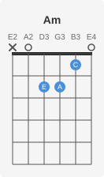 |
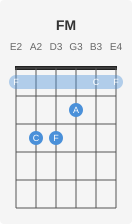 |
Chord box a partir de um Fingering¶
from gingo import Fretboard, FretboardSVG, Chord
fb = Fretboard.violao()
# Pegar uma digitacao especifica (ex: segunda melhor)
figs = fb.fingerings(Chord("CM"))
if len(figs) > 1:
second_best = figs[1]
svg = FretboardSVG.fingering(fb, second_best)
FretboardSVG.write(svg, "cm_alt.svg")
Escala no braco completo (horizontal)¶
from gingo import Fretboard, FretboardSVG, Scale
fb = Fretboard.violao()
# Braco horizontal com notas da escala
blues = Scale("A", "blues")
svg = FretboardSVG.scale(fb, blues)
FretboardSVG.write(svg, "a_blues.svg")
Resultado:
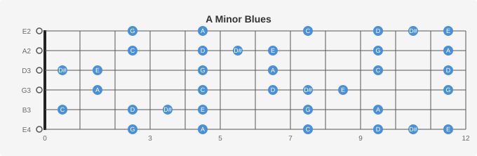
Nota unica no braco¶
from gingo import Fretboard, FretboardSVG, Note
fb = Fretboard.violao()
# Todas as posicoes de E no braco
svg = FretboardSVG.note(fb, Note("A"))
FretboardSVG.write(svg, "all_A.svg")
Resultado:
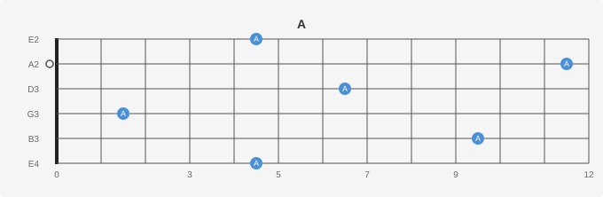
Posicoes arbitrarias¶
from gingo import Fretboard, FretboardSVG, FretPosition
fb = Fretboard.violao()
# Marcar posicoes especificas (ex: shape de Am pentatonica, posicao 5)
posicoes = [
FretPosition(6, 5), FretPosition(6, 8), # corda 6
FretPosition(5, 5), FretPosition(5, 7), # corda 5
FretPosition(4, 5), FretPosition(4, 7), # corda 4
FretPosition(3, 5), FretPosition(3, 7), # corda 3
FretPosition(2, 5), FretPosition(2, 8), # corda 2
FretPosition(1, 5), FretPosition(1, 8), # corda 1
]
svg = FretboardSVG.positions(fb, posicoes)
FretboardSVG.write(svg, "am_penta_pos5.svg")
Campo harmonico em grid¶
from gingo import Fretboard, FretboardSVG, Field, Layout
fb = Fretboard.violao()
# Grid: 7 chord boxes em grade (ideal para estudo)
campo = Field("G", "major")
svg = FretboardSVG.field(fb, campo, layout=Layout.Grid)
FretboardSVG.write(svg, "g_major_grid.svg")
Resultado (Grid):
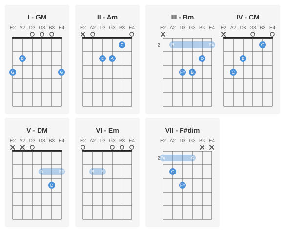
Progressao especifica¶
from gingo import Fretboard, FretboardSVG, Field
fb = Fretboard.violao()
campo = Field("C", "major")
# Progressao I-V-vi-IV (pop)
svg = FretboardSVG.progression(fb, campo, ["I", "V", "vi", "IV"])
FretboardSVG.write(svg, "pop_progression.svg")
Resultado (I-V-vi-IV):
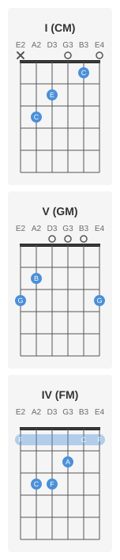
Diagramas para canhoto¶
from gingo import Fretboard, FretboardSVG, Chord, Scale, Handedness, Orientation
fb = Fretboard.violao()
# Chord box canhoto
svg = FretboardSVG.chord(fb, Chord("Em"), handedness=Handedness.LeftHanded)
FretboardSVG.write(svg, "em_left.svg")
Resultado:
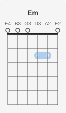
Fretboard horizontal para canhoto¶
from gingo import Fretboard, FretboardSVG, Scale, Orientation, Handedness
fb = Fretboard.violao()
# Braco horizontal canhoto
svg = FretboardSVG.scale(
fb,
Scale("E", "blues"),
orientation=Orientation.Horizontal,
handedness=Handedness.LeftHanded
)
FretboardSVG.write(svg, "blues_left.svg")
Fretboard vazio (gabarito)¶
from gingo import Fretboard, FretboardSVG, Orientation
fb = Fretboard.violao()
# Braco vazio para preencher a mao
svg = FretboardSVG.full(fb, orientation=Orientation.Horizontal)
FretboardSVG.write(svg, "blank_fretboard.svg")
CLI¶
gingo fretboard chord Am --svg am.svg # chord box
gingo fretboard chord Am --svg am_left.svg --left # canhoto
gingo fretboard scale "C major" --svg # escala horizontal
gingo fretboard scale "A blues" --svg --horizontal # horizontal explicito
gingo fretboard field "G major" --svg # campo em grid
3. Piano — Voicings e teclado¶
O Piano modela um teclado fisico e calcula voicings em tres estilos:
Close (posicao cerrada), Open (raiz oitava abaixo) e Shell (root+3+7).
Construcao e range¶
from gingo import Piano
# Pianos de diferentes tamanhos
p25 = Piano(25) # 2 oitavas: C3-C5 (compacto, para triades)
p44 = Piano(44) # 3.5 oitavas: D2-A5
p61 = Piano(61) # 5 oitavas: C2-C7 (teclado comum)
p88 = Piano(88) # Piano de concerto: A0-C8
for p in [p25, p44, p61, p88]:
lo = p.lowest()
hi = p.highest()
print(f"Piano({p.num_keys}): {lo.note}{lo.octave} (MIDI {lo.midi})"
f" ate {hi.note}{hi.octave} (MIDI {hi.midi})")
Saida:
Piano(25): C3 (MIDI 48) ate C5 (MIDI 72)
Piano(44): D2 (MIDI 38) ate A5 (MIDI 81)
Piano(61): F#1 (MIDI 30) ate F#6 (MIDI 90)
Piano(88): A0 (MIDI 21) ate C8 (MIDI 108)
Voicings — tres estilos¶
from gingo import Piano, Chord
p = Piano(25)
# Voicing padrao (close)
v = p.voicing(Chord("CM"))
teclas = ", ".join(f"{k.note}{k.octave}" for k in v.keys)
print(f"CM voicing: {teclas}") # C4, E4, G4
# Todos os voicings disponiveis (close, open, shell)
for v in p.voicings(Chord("CM")):
teclas = ", ".join(f"{k.note}{k.octave}" for k in v.keys)
print(f" {v.style.name:6s}: {teclas}")
# Close: C4 E4 G4 (posicao cerrada)
# Open: C3 E4 G4 (raiz 1 oitava abaixo)
# Shell: C4 E4 G4 (raiz + terca + setima, sem quinta em tetrades)
Saida:
Voicings de jazz¶
from gingo import Piano, Chord
p = Piano(44) # 44 teclas: D2-A5 (range suficiente para tetrades)
# Voicings para acordes de jazz
jazz_chords = ["Dm7", "G7", "C7M", "F7M", "Bm7(b5)", "E7", "Am7"]
print("Acordes de C major:\n")
for nome in jazz_chords:
v = p.voicing(Chord(nome))
teclas = ", ".join(f"{k.note}{k.octave}" for k in v.keys)
print(f" {nome:10s}: {teclas}")
Saida:
Dm7 : D4, F4, A4, C5
G7 : G4, B4, D5, F5
C7M : C4, E4, G4, B4
F7M : F4, A4, C5, E5
Bm7(b5) : B4, D5, F5, A5
E7 : E4, G#4, B4, D5
Am7 : A4, C5, E5, G5
Todos os voicings e inversoes¶
from gingo import Piano, Chord
p = Piano(25)
# Todas as formas de tocar CM neste piano
for v in p.voicings(Chord("CM")):
teclas = ", ".join(f"{k.note}{k.octave}" for k in v.keys)
print(f" {v.style.name:6s} inv.{v.inversion}: {teclas}")
# Piano maior revela mais voicings
p88 = Piano(88)
for v in p88.voicings(Chord("CM")):
teclas = ", ".join(f"{k.note}{k.octave}" for k in v.keys)
print(f" {v.style.name:6s} inv.{v.inversion}: {teclas}")
Teclas de uma escala¶
from gingo import Piano, Scale
p = Piano(25)
escala = Scale("C", "major")
# Quais teclas tocar para a escala de C maior?
for k in p.scale_keys(escala):
cor = "branca" if k.white else "preta"
print(f" {k.note}{k.octave}: tecla {cor}, posicao {k.position} (MIDI {k.midi})")
Saida:
C4: tecla branca (MIDI 60)
D4: tecla branca (MIDI 62)
E4: tecla branca (MIDI 64)
F4: tecla branca (MIDI 65)
G4: tecla branca (MIDI 67)
A4: tecla branca (MIDI 69)
B4: tecla branca (MIDI 71)
Consultar tecla individual¶
from gingo import Piano, Note
p = Piano(88)
# Info sobre uma tecla especifica
k = p.key(Note("A"), 4)
print(f"La 4: MIDI {k.midi}, posicao {k.position}, "
f"{'branca' if k.white else 'preta'}")
# Todas as teclas de C no piano
for k in p.keys(Note("C")):
print(f" C{k.octave}: MIDI {k.midi}")
Identificar acorde por MIDI¶
from gingo import Piano
p = Piano(88)
# O aluno pressionou estas teclas — que acorde e?
acorde = p.identify([60, 64, 67]) # C4, E4, G4
print(f"MIDI [60, 64, 67] = {acorde}") # CM
acorde = p.identify([57, 60, 64, 67]) # A3, C4, E4, G4
print(f"MIDI [57, 60, 64, 67] = {acorde}") # Am7
Saida:
Verificar range¶
from gingo import Piano
p = Piano(25)
# A nota esta no range deste teclado?
print(p.in_range(60)) # True — C4 esta no Piano(25)
print(p.in_range(21)) # False — A0 nao esta no Piano(25)
print(p.in_range(84)) # False — C6 nao esta no Piano(25)
4. PianoSVG — Visualizacao do teclado¶
O PianoSVG gera imagens SVG interativas com HTML5 data attributes
(data-midi, data-note, data-octave) para integracao com JavaScript.
Acorde destacado no teclado¶
from gingo import Piano, PianoSVG, Chord
p = Piano(44) # 44 teclas: range suficiente para tetrades completas
# Teclas de Am7 destacadas em azul
svg = PianoSVG.chord(p, Chord("Am7"))
PianoSVG.write(svg, "piano_am7.svg")
Resultado:
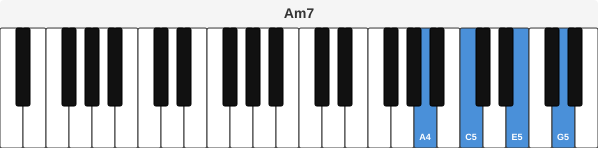
# Piano completo com acorde
p88 = Piano(88)
svg = PianoSVG.chord(p88, Chord("CM"))
PianoSVG.write(svg, "piano_full_cm.svg")
Resultado (88 teclas):
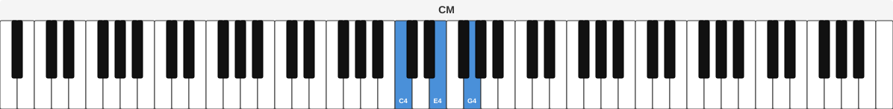
Voicing especifico no teclado¶
from gingo import Piano, PianoSVG, Chord
p = Piano(44)
# Visualizar voicing padrao
v = p.voicing(Chord("Dm7"))
svg = PianoSVG.voicing(p, v)
PianoSVG.write(svg, "piano_dm7.svg")
Resultado:
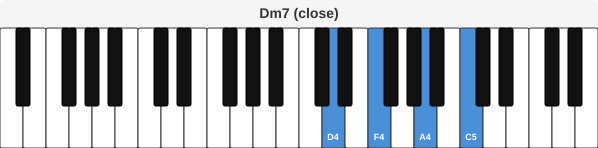
Escala no teclado¶
from gingo import Piano, PianoSVG, Scale
p = Piano(44)
# Escalas visuais para estudo
for nome in ["C major", "A natural minor", "C blues", "C harmonic minor"]:
escala = Scale(*nome.split(" ", 1))
svg = PianoSVG.scale(p, escala)
filename = nome.replace(" ", "_")
PianoSVG.write(svg, f"piano_{filename}.svg")
Resultado (C major):
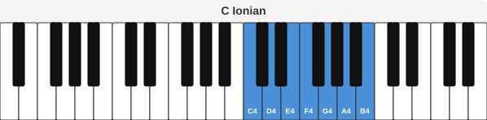
Campo harmonico em pianos empilhados¶
from gingo import Piano, PianoSVG, Field
p = Piano(44)
# 7 teclados empilhados — um por grau do campo
campo = Field("C", "major")
svg = PianoSVG.field(p, campo)
PianoSVG.write(svg, "piano_field_cmaj.svg")
Resultado:
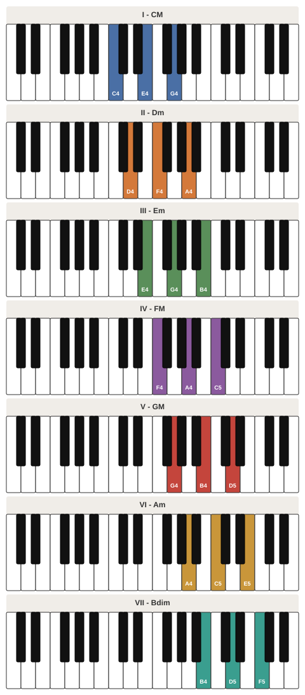
Progressao¶
from gingo import Piano, PianoSVG, Field
p = Piano(44)
campo = Field("C", "major")
# Progressao ii-V-I em teclados empilhados
svg = PianoSVG.progression(p, campo, ["ii", "V", "I"])
PianoSVG.write(svg, "piano_251.svg")
Resultado:
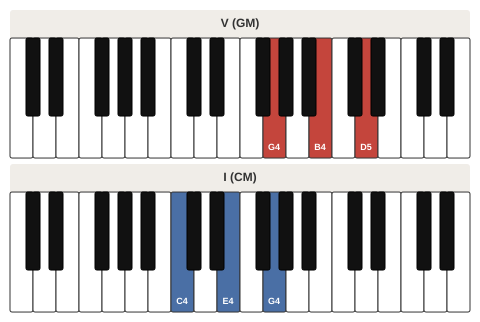
Nota individual e teclas MIDI¶
from gingo import Piano, PianoSVG, Note
p = Piano(44)
# Nota individual
svg = PianoSVG.note(p, Note("E"))
PianoSVG.write(svg, "piano_e.svg")
# Teclas por numero MIDI (util para MIDI controllers)
svg = PianoSVG.midi(p, [60, 64, 67])
PianoSVG.write(svg, "piano_ceg_midi.svg")
Resultado (nota E):
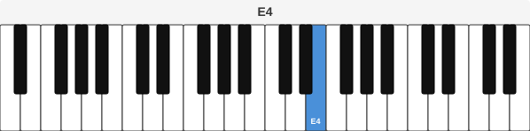
Resultado (MIDI 60, 64, 67):
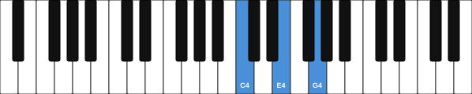
Integracao com JavaScript¶
O SVG gerado inclui atributos HTML5 em cada tecla:
Isso permite interatividade com JavaScript/D3/React:
// Exemplo: destacar tecla ao clicar
document.querySelectorAll('[data-midi]').forEach(key => {
key.addEventListener('click', () => {
const midi = key.dataset.midi;
const note = key.dataset.note;
console.log(`Pressionou ${note} (MIDI ${midi})`);
});
});
5. MusicXML — Exportacao para partitura¶
O MusicXML serializa objetos do Gingo para MusicXML 4.0, compativel
com MuseScore, Finale, Sibelius, Dorico e qualquer editor que suporte
o formato.
Nota, acorde e escala¶
from gingo import MusicXML, Note, Chord, Scale
# Nota individual
xml = MusicXML.note(Note("C"))
MusicXML.write(xml, "nota_do.musicxml")
# Acorde
MusicXML.write(MusicXML.chord(Chord("Am7")), "am7.musicxml")
# Escala completa (ascendente)
MusicXML.write(MusicXML.scale(Scale("C", "major")), "c_major.musicxml")
Saida (trecho do XML gerado):
<?xml version="1.0" encoding="UTF-8"?>
<!DOCTYPE score-partwise PUBLIC "-//Recordare//DTD MusicXML 4.0 Partwise//EN"
"http://www.musicxml.org/dtds/partwise.dtd">
<score-partwise version="4.0">
<work>
<work-title>C4</work-title>
</work>
<identification>
<encoding>
<software>Gingo</software>
</encoding>
</identification>
...
</score-partwise>
Os arquivos .musicxml abrem diretamente no MuseScore, Finale, Sibelius e Dorico.
Campo harmonico¶
from gingo import MusicXML, Field
# Campo de G maior — 7 acordes em partitura
MusicXML.write(MusicXML.field(Field("G", "major")), "g_field.musicxml")
# Campo de A menor harmonico
MusicXML.write(
MusicXML.field(Field("A", "harmonic minor")),
"am_harm_field.musicxml"
)
Sequencia com ritmo¶
from gingo import (
MusicXML, Sequence, NoteEvent, ChordEvent, Rest,
Duration, Tempo, Note, Chord
)
# Criar uma melodia simples
seq = Sequence(Tempo(120))
melodia = ["C", "D", "E", "F", "G", "A", "B", "C"]
for nota in melodia[:-1]:
seq.add(NoteEvent(Note(nota), Duration("quarter")))
# Ultima nota mais longa
seq.add(NoteEvent(Note("C"), Duration("whole")))
MusicXML.write(MusicXML.sequence(seq), "melodia.musicxml")
# Abra no MuseScore para ver e ouvir a partitura
Progressao com acordes ritmados¶
from gingo import (
MusicXML, Sequence, ChordEvent, Rest,
Duration, Tempo, Chord
)
# ii-V-I em semibreves
seq = Sequence(Tempo(100))
seq.add(ChordEvent(Chord("Dm7"), Duration("whole")))
seq.add(ChordEvent(Chord("G7"), Duration("whole")))
seq.add(ChordEvent(Chord("C7M"), Duration("whole")))
seq.add(Rest(Duration("whole")))
MusicXML.write(MusicXML.sequence(seq), "jazz_251.musicxml")
6. Progression — Analise cross-tradition¶
O Progression e o coordenador de analise harmonica. Ele conhece
multiplas tradicoes (arvore harmonica brasileira e jazz) e pode
identificar, deduzir e prever progressoes.
Tradicoes disponiveis¶
from gingo import Progression
for t in Progression.traditions():
print(f"{t.name}")
print(f" {t.description}")
Saida:
harmonic_tree
Harmonic Tree — José de Alencar Soares' model for Brazilian Popular Music harmonic progressions.
jazz
Jazz — Common chord progressions from the jazz tradition, including ii-V-I patterns, turnarounds, and backdoor progressions.
Identificar uma progressao¶
As branches precisam corresponder aos nos do grafo da tradicao. Use tree.branches()
para ver todas as branches validas.
from gingo import Progression
prog = Progression("C", "major")
# Turnaround jazz: I-VIm-IIm-V7
match = prog.identify(["I", "VIm", "IIm", "V7"])
print(f"Tradicao: {match.tradition}")
print(f"Schema: {match.schema}")
print(f"Score: {match.score:.2f}")
print(f"Matched: {match.matched}/{match.total}")
# Cadencia direta: I-V7-I
match = prog.identify(["I", "V7", "I"])
print(f"\nDireta: {match.tradition}/{match.schema} "
f"score={match.score:.2f}")
Saida:
Deduzir progressao (multiplos resultados ranqueados)¶
from gingo import Progression
prog = Progression("C", "major")
# Dadas estas branches, quais schemas se encaixam?
matches = prog.deduce(["I", "VIm", "IIm", "V7"], limit=5)
for m in matches:
print(f" {m.tradition}/{m.schema}: "
f"score={m.score:.2f}, matched={m.matched}/{m.total}")
Saida:
Prever proximo acorde¶
from gingo import Progression
prog = Progression("C", "major")
# Dado IIm-V7, o que vem depois?
sugestoes = prog.predict(["IIm", "V7"])
for s in sugestoes:
print(f" Proximo: {s.next:8s} "
f"(confianca: {s.confidence:.0%}, "
f"via {s.tradition}/{s.schema})")
Saida:
Proximo: I (confianca: 100%, via jazz/ii-V-I)
Proximo: I (confianca: 48%, via harmonic_tree/descending)
Serializacao para JSON¶
import json
from gingo import Progression
prog = Progression("C", "major")
match = prog.identify(["I", "VIm", "IIm", "V7"])
print(json.dumps(match.to_dict(), indent=2))
CLI¶
gingo progression "C major" --identify "I,VIm,IIm,V7"
gingo progression "C major" --deduce "I,V7,I"
gingo progression "C major" --predict "IIm,V7"
gingo progression "A natural minor" --identify "I,V7,I"
7. Tree — Arvore harmonica¶
O Tree modela a arvore de transicoes harmonicas de uma tradicao
especifica (grafo direcionado de acordes). Permite explorar caminhos,
validar sequencias e gerar visualizacoes.
Explorar a arvore¶
from gingo import Progression, HarmonicFunction
prog = Progression("C", "major")
tree = prog.tree("harmonic_tree")
# Metadata
t = tree.tradition()
print(f"Tradicao: {t.name}")
print(f"Descricao: {t.description}")
# Branches (nos do grafo) — primeiras 10
branches = tree.branches()
print(f"\nBranches ({len(branches)}):")
for b in branches[:10]:
func = tree.function(b)
print(f" {b:20s} -> {func.name}")
Saida:
Tradicao: harmonic_tree
Descricao: Harmonic Tree — José de Alencar Soares' model for Brazilian
Popular Music harmonic progressions.
Branches (27):
I -> Tonic
IIm / IV -> Subdominant
IIm7(b5) / IIm -> Subdominant
IIm7(11) / IV -> Subdominant
SUBV7 / IV -> Dominant
V7 / IV -> Dominant
VIm -> Tonic
V7 / IIm -> Dominant
Idim -> Tonic
#Idim -> Tonic
Branches por funcao harmonica¶
from gingo import Progression, HarmonicFunction
prog = Progression("C", "major")
tree = prog.tree("harmonic_tree")
# Quais branches tem funcao tonica?
print("Tonica:")
for b in tree.branches_with_function(HarmonicFunction.Tonic):
print(f" {b}")
# Subdominante?
print("\nSubdominante:")
for b in tree.branches_with_function(HarmonicFunction.Subdominant):
print(f" {b}")
# Dominante?
print("\nDominante:")
for b in tree.branches_with_function(HarmonicFunction.Dominant):
print(f" {b}")
Saida:
Tonica:
I
VIm
Idim
#Idim
bIIIdim
bVI
Subdominante:
IIm / IV
IIm7(b5) / IIm
IIm7(11) / IV
IV#dim
IV
IIm
IVm
IIm7(b5)
II#dim
Dominante:
SUBV7 / IV
V7 / IV
V7 / IIm
V7 / V
bVII
SUBV7
V7
V7 / VI
V7 / Im
V7 / III
V7 / bIII
V7 / bVI
Schemas (padroes nomeados)¶
from gingo import Progression
prog = Progression("C", "major")
tree = prog.tree("harmonic_tree")
for s in tree.schemas()[:5]:
print(f"{s.name}")
print(f" {s.description}")
print(f" Branches: {s.branches}")
print()
Saida:
descending
Main descending path (por baixo)
Branches: ['I', 'V7 / IIm', 'IIm', 'V7', 'I']
ascending
Ascending path through IV (por cima)
Branches: ['I', 'V7 / IV', 'IV', 'V7', 'I']
direct
Direct resolution I-V7-I
Branches: ['I', 'V7', 'I']
extended_descending
Extended descending with applied IIm7(b5)
Branches: ['I', 'IIm7(b5) / IIm', 'V7 / IIm', 'IIm', 'V7', 'I']
subdominant_prep
Subdominant preparation via IIm/IV
Branches: ['I', 'IIm / IV', 'V7 / IV', 'IV', 'V7', 'I']
Caminhos e validacao¶
from gingo import Progression
prog = Progression("C", "major")
tree = prog.tree("harmonic_tree")
# Esta sequencia e valida na arvore?
print(tree.is_valid(["I", "V7", "I"])) # True (cadencia direta)
print(tree.is_valid(["I", "#Idim", "IIm"])) # True (passagem cromatica)
# Caminho mais curto de I ate IIm
caminho = tree.shortest_path("I", "IIm")
print(f"I -> IIm: {' -> '.join(caminho)}")
# Explorar paths a partir de I
for path in tree.paths("I")[:5]:
print(f" {path.branch} -> {path.chord} "
f"({', '.join(path.note_names)})")
Saida:
True
True
I -> IIm: I -> #Idim -> IIm
I -> CM (['C', 'E', 'G'])
IIm / IV -> Gm (['G', 'Bb', 'D'])
IIm7(b5) / IIm -> Em7(b5) (['E', 'G', 'Bb', 'D'])
IIm7(11) / IV -> Gm7(11) (['G', 'Bb', 'D', 'F', 'C'])
VIm -> Am (['A', 'C', 'E'])
Visualizar como diagrama¶
from gingo import Progression
prog = Progression("C", "major")
tree = prog.tree("harmonic_tree")
# Gerar diagrama Mermaid (cole em mermaid.live)
mermaid = tree.to_mermaid()
with open("harmonic_tree.mmd", "w") as f:
f.write(mermaid)
# Gerar DOT (Graphviz)
dot = tree.to_dot()
with open("harmonic_tree.dot", "w") as f:
f.write(dot)
# Converter: dot -Tpng harmonic_tree.dot -o harmonic_tree.png
Ouvir a arvore¶
from gingo import Progression
prog = Progression("C", "major")
# Ouvir progressao da arvore
tree = prog.tree("harmonic_tree")
tree.play()
# Jazz
jazz = prog.tree("jazz")
jazz.play()
# Exportar
tree.to_wav("harmonic_tree.wav")
CLI¶
gingo tree "C major" harmonic_tree # explorar arvore
gingo tree "C major" jazz # arvore jazz
gingo tree "A natural minor" harmonic_tree # menor
8. Comparacao — Relacoes entre acordes¶
Comparacao absoluta (18 dimensoes)¶
from gingo import Chord
r = Chord("CM").compare(Chord("Am"))
# Notas
print(f"Notas em comum: {r.common_notes}") # [C, E]
print(f"Exclusivas A: {r.exclusive_a}") # [G]
print(f"Exclusivas B: {r.exclusive_b}") # [A]
# Raizes
print(f"Distancia de raiz: {r.root_distance}") # 3 (semitons, arco curto)
print(f"Direcao: {r.root_direction}") # -3
# Qualidade
print(f"Mesma qualidade: {r.same_quality}") # False (M vs m)
print(f"Mesmo tamanho: {r.same_size}") # True (ambos triades)
print(f"Enarmonico: {r.enharmonic}") # False
# Neo-Riemannian (Cohn 2012)
print(f"Transformacao: {r.transformation}") # R (Relative)
# Voice leading (Tymoczko 2011)
print(f"Voice leading: {r.voice_leading} st") # 2
# Interval vector (Forte 1973)
print(f"IV(CM): {r.interval_vector_a}") # [0, 0, 1, 1, 1, 0]
print(f"IV(Am): {r.interval_vector_b}") # [0, 0, 1, 1, 1, 0]
print(f"Mesmo IV: {r.same_interval_vector}") # True
# Transposicao T_n (Lewin 1987)
print(f"T_n: {r.transposition}") # -1 (nao e transposicao)
# Dissonancia (Plomp & Levelt 1965 / Sethares 1998)
print(f"Dissonancia CM: {r.dissonance_a:.4f}")
print(f"Dissonancia Am: {r.dissonance_b:.4f}")
Saida:
Notas em comum: [C, E]
Exclusivas A: [G]
Exclusivas B: [A]
Distancia de raiz: 3
Direcao: -3
Mesma qualidade: False
Mesmo tamanho: True
Enarmonico: False
Transformacao: R
Voice leading: 2 st
IV(CM): [0, 0, 1, 1, 1, 0]
IV(Am): [0, 0, 1, 1, 1, 0]
Mesmo IV: True
T_n: -1
Dissonancia CM: 0.1826
Dissonancia Am: 0.1027
Transformacoes neo-Riemannianas¶
from gingo import Chord
# Fundamentais: P, L, R
pares = [
("CM", "Cm", "P"), # Parallel: terca muda
("CM", "Em", "L"), # Leading-tone: raiz desce 1 semitom
("CM", "Am", "R"), # Relative: quinta sobe 1 tom
]
for a, b, esperado in pares:
r = Chord(a).compare(Chord(b))
print(f"{a} -> {b}: {r.transformation} (esperado: {esperado})")
# Composicoes de 2 passos
print()
print(f"CM -> AM: {Chord('CM').compare(Chord('AM')).transformation}") # RP
print(f"CM -> EM: {Chord('CM').compare(Chord('EM')).transformation}") # LP
print(f"CM -> G#M: {Chord('CM').compare(Chord('G#M')).transformation}") # PL
Saida:
CM -> Cm: P (esperado: P)
CM -> Em: L (esperado: L)
CM -> Am: R (esperado: R)
CM -> AM: RP
CM -> EM: LP
| Transformacao | Audio |
|---|---|
| P (CM → Cm) | |
| L (CM → Em) | |
| R (CM → Am) |
Comparacao contextual (21 dimensoes)¶
from gingo import Field, Chord
f = Field("C", "major")
# Diatonico: I -> V (cadencia autentica)
r = f.compare(Chord("CM"), Chord("GM"))
print(f"Graus: {r.degree_a} -> {r.degree_b}") # 1 -> 5
print(f"Funcoes: {r.function_a} -> {r.function_b}") # Tonic -> Dominant
print(f"Mesma funcao: {r.same_function}") # False
print(f"Root motion: {r.root_motion}") # ascending_fifth
print(f"Diatonico A: {r.diatonic_a}") # True
print(f"Diatonico B: {r.diatonic_b}") # True
# Dominante secundaria
r = f.compare(Chord("D7"), Chord("GM"))
print(f"\nD7 -> GM:")
print(f" Dominante secundaria: {r.secondary_dominant}") # a_is_V7_of_b
# Diminuta aplicada (Gauldin 1997)
r = f.compare(Chord("Bdim"), Chord("CM"))
print(f"\nBdim -> CM:")
print(f" Diminuta aplicada: {r.applied_diminished}") # a_is_viidim_of_b
# Substituicao tritonal
r = f.compare(Chord("G7"), Chord("C#7"))
print(f"\nG7 -> C#7:")
print(f" Tritone sub: {r.tritone_sub}") # True
# Mediante cromatica (Cohn 2012)
r = f.compare(Chord("CM"), Chord("EM"))
print(f"\nCM -> EM:")
print(f" Mediante cromatica: {r.chromatic_mediant}") # upper
Saida:
Graus: 1 -> 5
Funcoes: Tonic -> Dominant
Mesma funcao: False
Root motion: ascending_fifth
Diatonico A: True
Diatonico B: True
D7 -> GM:
Dominante secundaria: a_is_V7_of_b
Bdim -> CM:
Diminuta aplicada: a_is_viidim_of_b
G7 -> C#7:
Tritone sub: True
CM -> EM:
Mediante cromatica: upper
Emprestimo modal e acorde pivot¶
from gingo import Field, Chord
f = Field("C", "major")
# Fm nao pertence a C maior — e emprestado!
r = f.compare(Chord("CM"), Chord("Fm"))
print(f"Fm e diatonico? {r.diatonic_b}") # False
print(f"Emprestado de: {r.borrowed_b.scale_type}") # NaturalMinor
print(f"Grau na origem: {r.borrowed_b.degree}") # 4
print(f"Funcao na origem: {r.borrowed_b.function.name}") # Subdominant
print(f"Notas estrangeiras: {r.foreign_b}") # [G#] (= Ab)
# Am e acorde pivot (pertence a mais de uma tonalidade)
r = f.compare(Chord("CM"), Chord("Am"))
print(f"\nAm como pivot:")
for p in r.pivot[:3]:
print(f" {p.tonic} {p.scale_type}: grau {p.degree_a} -> {p.degree_b}")
Saida:
Fm e diatonico? False
Emprestado de: NaturalMinor
Grau na origem: 4
Funcao na origem: Subdominant
Notas estrangeiras: [Ab]
Am como pivot:
C Major: grau 1 -> 6
C MelodicMinor: grau 1 -> 6
C# HarmonicMinor: grau 7 -> 6
Serializacao¶
import json
from gingo import Chord, Field
# Absoluta
d = Chord("CM").compare(Chord("Am")).to_dict()
print(json.dumps(d, indent=2, default=str))
# Contextual
f = Field("C", "major")
d = f.compare(Chord("CM"), Chord("GM")).to_dict()
print(json.dumps(d, indent=2, default=str))
CLI¶
gingo compare CM Am # absoluta
gingo compare CM GM --field "C major" # contextual
gingo compare CM Fm --field "C major" # emprestimo modal
gingo compare D7 GM --field "C major" # dominante secundaria
9. Ritmo — Duracoes, tempo e sequencia¶
Duracoes racionais¶
from gingo import Duration
# Por nome
semibreve = Duration("whole") # 4 beats
minima = Duration("half") # 2 beats
seminima = Duration("quarter") # 1 beat
colcheia = Duration("eighth") # 0.5 beat
semicolcheia = Duration("sixteenth") # 0.25 beat
# Info
print(f"Seminima: {seminima.beats()} beats, {seminima.name()}")
# Com ponto de aumento (multiplica por 1.5)
seminima_pont = Duration("quarter", 1) # 1 ponto
print(f"Seminima pontuada: {seminima_pont.beats()} beats") # 1.5
# Duplo ponto (multiplica por 1.75)
minima_dpp = Duration("half", 2) # 2 pontos
print(f"Minima duplo ponto: {minima_dpp.beats()} beats") # 3.5
Saida:
Tempo (BPM e marcacoes italianas)¶
from gingo import Tempo
t = Tempo(130)
print(f"BPM: {t.bpm()}")
print(f"Marcacao: {t.marking()}") # "Allegro"
print(f"ms por beat: {t.ms_per_beat()}") # ~461
# Converter marcacao para BPM
print(f"Adagio: {Tempo.marking_to_bpm('Adagio')} BPM") # 65
print(f"Allegro: {Tempo.marking_to_bpm('Allegro')} BPM") # 138
Saida:
Formula de compasso¶
from gingo import TimeSignature
ts = TimeSignature(4, 4)
print(f"Compasso: {ts.signature()}") # (4, 4)
print(f"Nome: {ts.common_name()}") # "common time"
print(f"Classificacao: {ts.classification()}") # "simple"
print(f"Beats por compasso: {ts.beats_per_bar()}")
print(f"Duracao do compasso: {ts.bar_duration()}") # Duration("whole")
# Outros compassos
for b, u in [(3, 4), (6, 8), (5, 4), (7, 8)]:
ts = TimeSignature(b, u)
print(f" {ts.common_name():12s}: {ts.classification()}")
Saida:
Compasso: (4, 4)
Nome: common time
Classificacao: simple
Beats por compasso: 4
Duracao do compasso: whole
3/4 : simple
6/8 : compound
5/4 : simple
7/8 : simple
Sequencia musical completa¶
from gingo import (
Sequence, NoteEvent, ChordEvent, Rest,
Duration, Tempo, TimeSignature, Note, Chord
)
# Criar sequencia
seq = Sequence(Tempo(120), TimeSignature(4, 4))
# Melodia: C-E-G pausa CM (semibreve)
seq.add(NoteEvent(Note("C"), Duration("quarter")))
seq.add(NoteEvent(Note("E"), Duration("quarter")))
seq.add(NoteEvent(Note("G"), Duration("quarter")))
seq.add(Rest(Duration("quarter")))
seq.add(ChordEvent(Chord("CM"), Duration("whole")))
# Info
print(f"Compassos: {seq.bar_count()}")
print(f"Duracao total: {seq.total_duration()} beats")
print(f"Em segundos: {seq.total_seconds():.1f}s")
# Ouvir e exportar
seq.play()
seq.to_wav("sequencia.wav")
# Transpor +5 semitons (C major -> F major)
seq.transpose(5)
seq.play()
Saida:
CLI¶
gingo duration quarter # info da duracao
gingo duration quarter --dotted # pontuada
gingo tempo 120 # info do tempo
gingo timesig 4 4 # formula de compasso
10. Audio — Sintese e playback¶
Ouvir qualquer objeto¶
from gingo import Note, Chord, Scale, Field
# Tudo tem .play() e .to_wav()
Note("C").play()
Chord("Am7").play()
Scale("C", "major").play()
Field("C", "major").play()
| Objeto | Audio |
|---|---|
| Chord("Am") | |
| Scale("C", "major") | |
| Field("C", "major") |
Controlar timbre e velocidade¶
from gingo import Note, Chord, Scale
# Waveforms: sine (padrao), square, sawtooth, triangle
Note("A").play(waveform="triangle", octave=5)
Chord("CM").play(waveform="square", strum=0.05)
Scale("A", "blues").play(duration=0.3, gap=0.05, waveform="sawtooth")
Compare os timbres da nota La (A4) em cada waveform:
| Waveform | Timbre | Audio |
|---|---|---|
sine |
puro, flauta | |
square |
cheio, clarinete | |
sawtooth |
brilhante, violino | |
triangle |
suave, quase-sine |
Funcao standalone play()¶
from gingo.audio import play
# Progressao pop
play(["CM", "GM", "Am", "FM"], duration=0.8, waveform="triangle")
# Progressao jazz com strum
play(["Dm7", "G7", "C7M"], duration=1.0, strum=0.04)
| Progressao pop (CM-GM-Am-FM) | Jazz ii-V-I (Dm7-G7-C7M) |
|---|---|
Exportar para WAV¶
from gingo import Chord, Scale
Chord("Am7").to_wav("am7.wav")
Scale("C", "major").to_wav("c_major.wav", duration=0.3)
CLI¶
gingo note A --play --waveform triangle
gingo chord Am7 --play --strum 0.06
gingo scale "C major" --play --gap 0.08
gingo field "C major" --play
gingo note C --wav do.wav
Caso de uso: Analise de uma musica¶
Exemplo completo analisando "Let It Be" (Beatles):
from gingo import (
Field, Chord, Scale,
Fretboard, FretboardSVG, Piano, PianoSVG, MusicXML
)
# 1. Acordes da musica
acordes = ["CM", "GM", "Am", "FM"]
print("Acordes: " + " - ".join(acordes))
# 2. Descobrir a tonalidade
matches = Field.deduce(acordes)
campo = matches[0].field
print(f"Tonalidade: {campo}") # C major
# 3. Funcoes harmonicas
print("\nAnalise funcional:")
for a in acordes:
func = campo.function(a)
role = campo.role(a)
print(f" {a:4s}: {func.name:13s} ({func.short}) — {role}")
# 4. Digitacoes no violao
fb = Fretboard.violao()
svg_fb = FretboardSVG
print("\nDigitacoes:")
for a in acordes:
fig = fb.fingering(Chord(a))
print(f" {a}: {fig}")
# 5. SVGs de chord boxes
for a in acordes:
svg = FretboardSVG.chord(fb, Chord(a))
FretboardSVG.write(svg, f"letitbe_{a.lower()}.svg")
# 6. Progressao em fretboard
svg = FretboardSVG.progression(fb, campo, ["I", "V", "vi", "IV"])
FretboardSVG.write(svg, "letitbe_progression.svg")
# 7. Voicings no piano
p = Piano(44)
print("\nVoicings (piano):")
for a in acordes:
v = p.voicing(Chord(a))
teclas = ", ".join(f"{k.note}{k.octave}" for k in v.keys)
print(f" {a}: {teclas}")
# 8. SVGs de piano
for a in acordes:
svg = PianoSVG.chord(p, Chord(a))
PianoSVG.write(svg, f"letitbe_piano_{a.lower()}.svg")
# 9. Escala para improviso
penta = Scale("C", "major pentatonic")
print(f"\nEscala para solo: {penta.notes()}")
svg = FretboardSVG.scale(fb, penta)
FretboardSVG.write(svg, "letitbe_solo.svg")
# 10. MusicXML do campo
MusicXML.write(MusicXML.field(campo), "letitbe_campo.musicxml")
Saida:
Acordes: CM - GM - Am - FM
Tonalidade: C major
Analise funcional:
CM : Tonic (T) — primary
GM : Dominant (D) — primary
Am : Tonic (T) — relative of I
FM : Subdominant (S) — primary
Digitacoes:
CM: X 0 2 2 1 0
GM: 3 2 0 0 0 3
Am: X 0 2 2 1 0
FM: 1 1 2 3 3 1
Voicings (piano):
CM: C4, E4, G4
GM: G4, B4, D5
Am: A4, C5, E5
FM: F4, A4, C5
Escala para solo: [C, D, E, G, A]
| Progressao (CM-GM-Am-FM) | Escala para solo (C penta) |
|---|---|
Caso de uso: Estudo comparativo de tonalidades¶
from gingo import Field, Chord
# C major vs A minor (relativos)
c_maj = Field("C", "major")
a_min = Field("A", "natural minor")
print("C Major vs A Minor\n")
# Tabela lado a lado
print(f"{'Grau':5s} {'C Major':10s} {'A Minor':10s}")
print("-" * 30)
for i in range(1, 8):
tc = c_maj.chord(i)
ta = a_min.chord(i)
print(f" {i:3d} {tc.name():10s} {ta.name():10s}")
# Acordes em comum
print("\nAcordes em comum:")
acordes_c = {c_maj.chord(i).name() for i in range(1, 8)}
acordes_a = {a_min.chord(i).name() for i in range(1, 8)}
comuns = acordes_c & acordes_a
for nome in sorted(comuns):
print(f" {nome}")
Saida:
C Major vs A Minor
Grau C Major A Minor
------------------------------
1 CM Am
2 Dm Bdim
3 Em CM
4 FM Dm
5 GM Em
6 Am FM
7 Bdim GM
Acordes em comum:
Am
Bdim
CM
Dm
Em
FM
GM
C major e A natural minor sao relativos — compartilham todos os 7 acordes, apenas em graus diferentes!
| C Major (campo) | A Minor (campo) |
|---|---|
from gingo import Chord
# Comparar V de cada campo usando Chord.compare (absoluta)
v_cmaj = c_maj.chord(5) # GM
v_amin = a_min.chord(5) # Em
r = v_cmaj.compare(v_amin)
print(f"V(C maj) = {v_cmaj.name()}")
print(f"V(A min) = {v_amin.name()}")
print(f"Transformacao: {r.transformation}")
print(f"Voice leading: {r.voice_leading} st")
# Comparacao contextual: mesmos acordes no campo de C major
rc = c_maj.compare(v_cmaj, v_amin)
print(f"Root motion: {rc.root_motion}")
print(f"Funcoes: {rc.function_a.name} -> {rc.function_b.name}")
print(f"Mediante cromatica: {rc.chromatic_mediant}")
Saida:
V(C maj) = GM
V(A min) = Em
Transformacao: R
Voice leading: 2 st
Root motion: descending_third
Funcoes: Dominant -> Tonic
Mediante cromatica: lower
Caso de uso: Gerar material visual de estudo¶
Script que gera SVGs de violao e piano + MusicXML para uma tonalidade:
from gingo import (
Field, Scale, Chord,
Fretboard, FretboardSVG, Piano, PianoSVG, MusicXML,
Layout
)
tonica = "G"
tipo = "major"
campo = Field(tonica, tipo)
escala = Scale(tonica, tipo)
# ---- Violao ----
fb = Fretboard.violao()
# Campo harmonico em grid
FretboardSVG.write(
FretboardSVG.field(fb, campo, layout=Layout.Grid),
f"{tonica}_{tipo}_field_guitar.svg"
)
# Escala no braco
FretboardSVG.write(
FretboardSVG.scale(fb, escala),
f"{tonica}_{tipo}_scale_guitar.svg"
)
# Pentatonica
penta = Scale(tonica, "major pentatonic")
FretboardSVG.write(
FretboardSVG.scale(fb, penta),
f"{tonica}_{tipo}_penta_guitar.svg"
)
# Cada acorde individual
for i in range(1, 8):
acorde = campo.chord(i)
FretboardSVG.write(
FretboardSVG.chord(fb, acorde),
f"{tonica}_{tipo}_{i}_{acorde.name()}_guitar.svg"
)
# ---- Piano ----
p = Piano(44)
# Campo no piano
PianoSVG.write(
PianoSVG.field(p, campo),
f"{tonica}_{tipo}_field_piano.svg"
)
# Escala no piano
PianoSVG.write(
PianoSVG.scale(p, escala),
f"{tonica}_{tipo}_scale_piano.svg"
)
# ---- MusicXML ----
MusicXML.write(
MusicXML.field(campo),
f"{tonica}_{tipo}_field.musicxml"
)
MusicXML.write(
MusicXML.scale(escala),
f"{tonica}_{tipo}_scale.musicxml"
)
print(f"Material de estudo de {tonica} {tipo} gerado!")
Caso de uso: Dicionario de acordes interativo¶
from gingo import (
Chord, Fretboard, FretboardSVG,
Piano, PianoSVG
)
# Todos os tipos de acorde sobre C
tipos = [
"CM", "Cm", "C7", "C7M", "Cm7", "Cdim", "Caug",
"Csus4", "Csus2", "C6", "Cm6", "C9", "Cm9",
"C7(b5)", "Cm7(b5)", "Cdim7", "C7sus4"
]
fb = Fretboard.violao()
p = Piano(44)
for nome in tipos:
chord = Chord(nome)
# Info basica
notas = ", ".join(str(n) for n in chord.notes())
ivs = ", ".join(chord.interval_labels())
print(f"\n{nome}")
print(f" Notas: {notas}")
print(f" Intervalos: {ivs}")
# Digitacao
fig = fb.fingering(chord)
print(f" Violao: {fig}")
# Voicing piano
v = p.voicing(chord)
teclas = ", ".join(f"{k.note}{k.octave}" for k in v.keys)
print(f" Piano: {teclas}")
# SVGs
FretboardSVG.write(
FretboardSVG.chord(fb, chord),
f"dict_{nome.replace('(', '').replace(')', '')}_guitar.svg"
)
PianoSVG.write(
PianoSVG.chord(p, chord),
f"dict_{nome.replace('(', '').replace(')', '')}_piano.svg"
)
Saida (primeiros 7 tipos):
CM
Notas: C, E, G
Intervalos: P1, 3M, 5J
Piano: C4, E4, G4
Cm
Notas: C, Eb, G
Intervalos: P1, 3m, 5J
Piano: C4, D#4, G4
C7
Notas: C, E, G, Bb
Intervalos: P1, 3M, 5J, 7m
Piano: C4, E4, G4, A#4
C7M
Notas: C, E, G, B
Intervalos: P1, 3M, 5J, 7M
Piano: C4, E4, G4, B4
Cm7
Notas: C, Eb, G, Bb
Intervalos: P1, 3m, 5J, 7m
Piano: C4, D#4, G4, A#4
Cdim
Notas: C, Eb, Gb
Intervalos: P1, 3m, d5
Piano: C4, D#4, F#4
Caug
Notas: C, E, Ab
Intervalos: P1, 3M, #5
Piano: C4, E4, G#4
O script gera 17 chord boxes SVG para violao e 17 teclados SVG para piano, cobrindo todos os tipos de acorde suportados pelo Gingo.
Caso de uso: Cross-tradition analysis¶
from gingo import Progression
prog = Progression("C", "major")
# Turnaround de jazz: I-VIm-IIm-V7
sequencia = ["I", "VIm", "IIm", "V7"]
# Identificar em qual tradicao se encaixa
match = prog.identify(sequencia)
print(f"Melhor match: {match.tradition}/{match.schema}")
print(f"Score: {match.score:.2f}")
# Deduzir alternativas
print("\nAlternativas:")
for m in prog.deduce(sequencia, limit=5):
print(f" {m.tradition}/{m.schema}: {m.score:.2f}")
# Prever continuacao
print("\nSugestoes de continuacao:")
for s in prog.predict(sequencia):
print(f" -> {s.next} ({s.confidence:.0%}, {s.tradition}/{s.schema})")
# Comparar schemas das duas tradicoes
jazz_tree = prog.tree("jazz")
ht_tree = prog.tree("harmonic_tree")
print(f"\nSchemas jazz ({len(jazz_tree.schemas())}):")
for s in jazz_tree.schemas():
print(f" {s.name}: {s.branches}")
print(f"\nSchemas harmonic_tree ({len(ht_tree.schemas())}):")
for s in ht_tree.schemas()[:5]:
print(f" {s.name}: {s.branches}")
Saida:
Melhor match: jazz/turnaround
Score: 1.00
Alternativas:
jazz/turnaround: 1.00
harmonic_tree/: 0.67
Sugestoes de continuacao:
-> I (30%, harmonic_tree/)
-> I (30%, jazz/)
Schemas jazz (5):
ii-V-I: ['IIm', 'V7', 'I']
turnaround: ['I', 'VIm', 'IIm', 'V7']
backdoor: ['IVm', 'bVII', 'I']
tritone_sub: ['IIm', 'SUBV7', 'I']
extended_turnaround: ['IIIm', 'VIm', 'IIm', 'V7']
Schemas harmonic_tree (8):
descending: ['I', 'V7 / IIm', 'IIm', 'V7', 'I']
ascending: ['I', 'V7 / IV', 'IV', 'V7', 'I']
direct: ['I', 'V7', 'I']
extended_descending: ['I', 'IIm7(b5) / IIm', 'V7 / IIm', 'IIm', 'V7', 'I']
subdominant_prep: ['I', 'IIm / IV', 'V7 / IV', 'IV', 'V7', 'I']